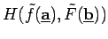
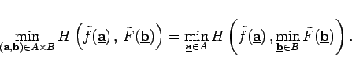
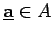
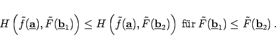
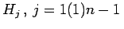
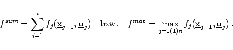
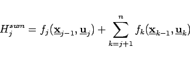
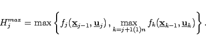

Inhalt Index DeskTop Bronstein

 Optimierung Diskrete dynamische Optimierung Bellmannsche Funktionalgleichungen Eigenschaften der Kostenfunktion
Optimierung Diskrete dynamische Optimierung Bellmannsche Funktionalgleichungen Eigenschaften der Kostenfunktion


Eine Funktion  heißt minimumvertauschbar, falls gilt:
|  | (18.123) |
Diese Eigenschaft ist zum Beispiel dann erfüllt, wenn H für jedes  bezüglich des zweiten Argumentes monoton wachsend ist, d.h., wenn für alle gilt:
|  | (18.124) |
Für die Kostenfunktion des dynamischen Optimierungsproblems wird nun die Separierbarkeit von f und die Minimumvertauschbarkeit aller Funktionen , gefordert.
Folgende häufig Verwendung findende Klassen von Kostenfunktionen genügen beiden Bedingungen:
|  | (18.125) |
Die Funktionen Hj lauten
|  | (18.126) |
bzw.
|  | (18.127) |